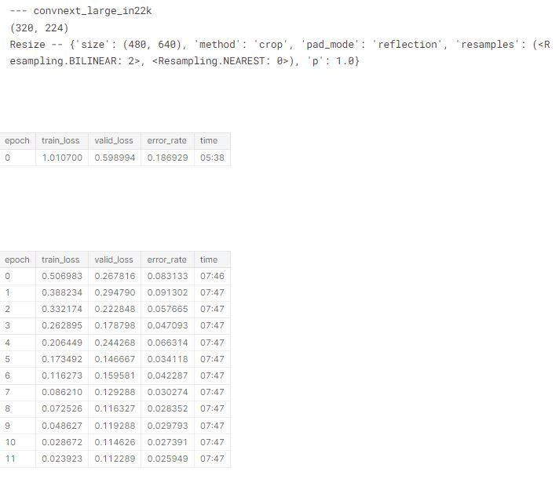
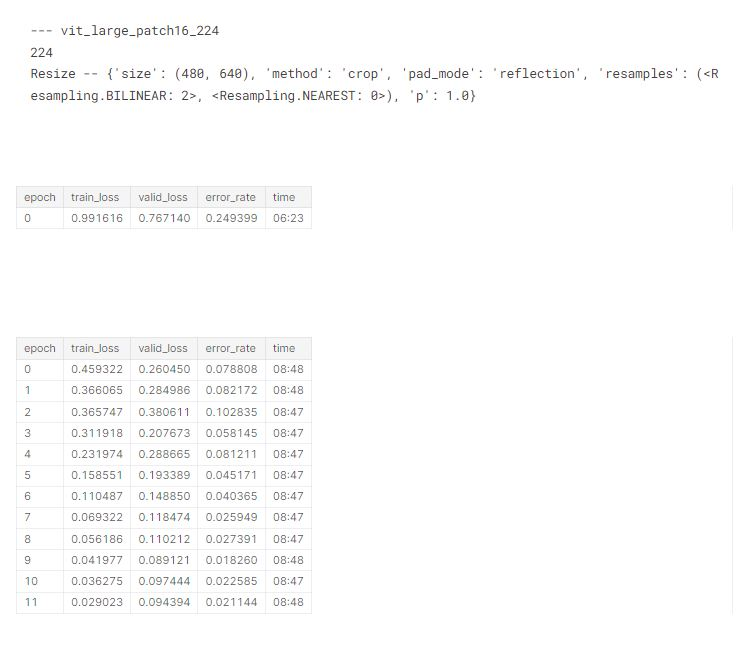
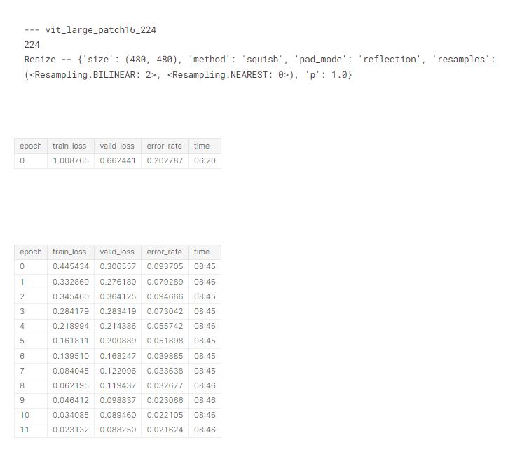
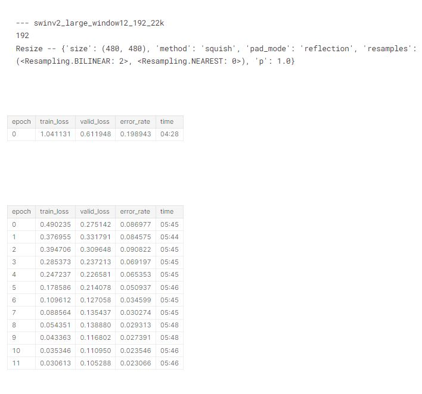
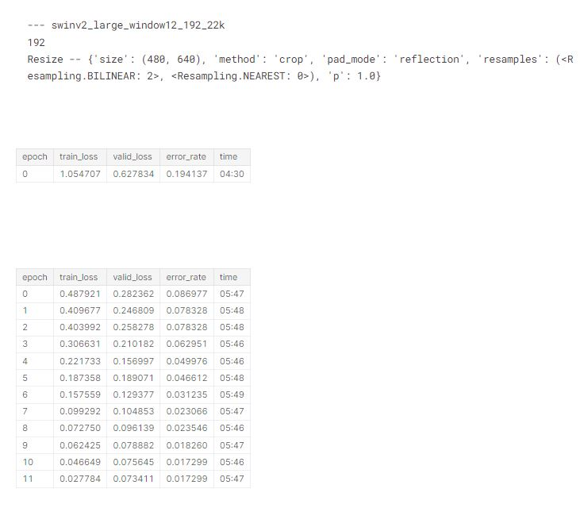
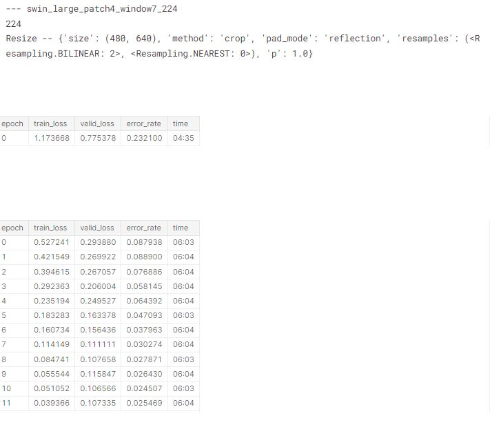

!pip install -q kaggle
comp = 'paddy-disease-classification'
path = setup_comp(comp, install='fastai "timm>=0.6.2.dev0"')
from fastai.vision.all import *
set_seed(42)
tst_files = get_image_files(path/'test_images').sorted()This is my follow up to the first part of Lesson 7: Practical Deep Learning for Coders 2022 in which Jeremy introduces a technique known as Gradient Accumulation which allows us to train larger models, despite apparent GPU constraints.
Overview
In this analysis our goal will be to train an ensemble of larger models with larger inputs. The challenge when training such models is generally GPU memory. Kaggle GPUs have 16280MiB of memory available, as at the time of writing. I like to try out my notebooks on my home PC, then upload them – but we still need them to run OK on Kaggle (especially if it’s a code competition, where this is required). Just because it runs OK at home doesn’t mean it’ll run OK on Kaggle.
I’m using PaperSpace (I recently upgraded to a ‘Pro’ subscription but capacity for GPUs is still quite limited.
It’s really helpful to be able to quickly try a few models and image sizes and find out what will run successfully. To make this quick, we can just grab a small subset of the data for running short epochs – the memory use will still be the same, but it’ll be much faster.
One easy way to do this is to simply pick a category with few files in it. Here’s our options:
First we’ll repeat the steps we used last time to access the data and ensure all the latest libraries are installed, and we’ll also grab the files we’ll need for the test set:
::: {.cell _kg_hide-input=‘true’ _kg_hide-output=‘true’ tags=‘[]’}
# install fastkaggle if not available
try: import fastkaggle
except ModuleNotFoundError:
!pip install -Uq fastkaggle
from fastkaggle import *
!pip install timm
import timm:::
# load dataset
df = pd.read_csv(path/'train.csv')
df.label.value_counts()normal 1764
blast 1738
hispa 1594
dead_heart 1442
tungro 1088
brown_spot 965
downy_mildew 620
bacterial_leaf_blight 479
bacterial_leaf_streak 380
bacterial_panicle_blight 337
Name: label, dtype: int64Memory and gradient accumulation
Gradient accumulation refers to a very simple trick: rather than updating the model weights after every batch based on that batch’s gradients, instead keep accumulating (adding up) the gradients for a few batches, and them update the model weights with those accumulated gradients. In fastai, the parameter you pass to GradientAccumulation defines how many batches of gradients are accumulated. Since we’re adding up the gradients over accum batches, we therefore need to divide the batch size by that same number. The resulting training loop is nearly mathematically identical to using the original batch size, but the amount of memory used is the same as using a batch size accum times smaller!
For instance, here’s a basic example of a single epoch of a training loop without gradient accumulation:
for x,y in dl:
calc_loss(coeffs, x, y).backward()
coeffs.data.sub_(coeffs.grad * lr)
coeffs.grad.zero_()Here’s the same thing, but with gradient accumulation added (assuming a target effective batch size of 64):
count = 0 # track count of items seen since last weight update
for x,y in dl:
count += len(x) # update count based on this minibatch size
calc_loss(coeffs, x, y).backward()
if count>64: # count is greater than accumulation target, so do weight update
coeffs.data.sub_(coeffs.grad * lr)
coeffs.grad.zero_()
count=0 # reset countThe full implementation in fastai is only a few lines of code – here’s the source code. To see the impact of gradient accumulation, consider this small model:
Let’s use bacterial_panicle_blight since it’s the smallest:
# create a susbset to include only the smallest disease dataset
# we don't really care about this model, we just want to know how much memory it uses
trn_path = path/'train_images'/'bacterial_panicle_blight'Now we’ll set up a train function which is very similar to the steps we used for training in the last notebook. But there’s a few significant differences…
The first is that I’m using a finetune argument to pick whether we are going to run the fine_tune() method, or the fit_one_cycle() method – the latter is faster since it doesn’t do an initial fine-tuning of the head. When we fine tune in this function I also have it calculate and return the TTA predictions on the test set, since later on we’ll be ensembling the TTA results of a number of models. Note also that we no longer have seed=42 in the ImageDataLoaders line – that means we’ll have different training and validation sets each time we call this. That’s what we’ll want for ensembling, since it means that each model will use slightly different data.
The more important change is that I’ve added an accum argument to implement gradient accumulation. As you’ll see in the code below, this does two things:
- Divide the batch size by
accum - Add the
GradientAccumulationcallback, passing inaccum.
# create a function to train a model which includes a gradient accumulation (accum) argument, when set to 1 no impact on batch size
# note no seed set so different training & validation sets each time we call it
def train(arch, size, item=Resize(480, method='squish'), accum=1, finetune=True, epochs=12):
dls = ImageDataLoaders.from_folder(trn_path, valid_pct=0.2, item_tfms=item,
batch_tfms=aug_transforms(size=size, min_scale=0.75), bs=64//accum)
cbs = GradientAccumulation(64) if accum else []
learn = vision_learner(dls, arch, metrics=error_rate, cbs=cbs).to_fp16()
if finetune:
learn.fine_tune(epochs, 0.01)
return learn.tta(dl=dls.test_dl(tst_files))
else:
learn.unfreeze()
learn.fit_one_cycle(epochs, 0.01)# try out our new training function on a small model
train('convnext_small_in22k', 128, epochs=1, accum=1, finetune=False)| epoch | train_loss | valid_loss | error_rate | time |
|---|---|---|---|---|
| 0 | 0.000000 | 0.000000 | 0.000000 | 00:13 |
Let’s create a function to find out how much memory it used, and also to then clear out the memory for the next run:
import gc
# create a function that tells us how much memory model uses
def report_gpu():
print(torch.cuda.list_gpu_processes())
gc.collect()
torch.cuda.empty_cache() # clear out memory for next run!pip install pynvml
report_gpu()Requirement already satisfied: pynvml in /usr/local/lib/python3.9/dist-packages (11.4.1)
WARNING: Running pip as the 'root' user can result in broken permissions and conflicting behaviour with the system package manager. It is recommended to use a virtual environment instead: https://pip.pypa.io/warnings/venv
GPU:0
process 26004 uses 3768.625 MB GPU memorySo with accum=1 the GPU used around 3.8GB RAM. Let’s try accum=2:
# try out our new training function on a model
train('convnext_small_in22k', 128, epochs=1, accum=2, finetune=False)
report_gpu()| epoch | train_loss | valid_loss | error_rate | time |
|---|---|---|---|---|
| 0 | 0.000000 | 0.000000 | 0.000000 | 00:12 |
GPU:0
process 26004 uses 2750.625 MB GPU memoryAs you see, the RAM usage has now gone down to 2.75GB. It’s not halved since there’s other overhead involved (for larger models this overhead is likely to be relatively lower).
Let’s try 4:
# try out our new training function on a model
train('convnext_small_in22k', 128, epochs=1, accum=4, finetune=False)
report_gpu()| epoch | train_loss | valid_loss | error_rate | time |
|---|---|---|---|---|
| 0 | 0.000000 | 0.000000 | 0.000000 | 00:12 |
GPU:0
process 26004 uses 2216.625 MB GPU memoryThe memory use is even lower!
Checking memory use
We’ll now check the memory use for each of the architectures and sizes we’ll be training later, to ensure they all fit in 8GB RAM. For each of these, I tried accum=1 first, and then doubled it any time the resulting memory use was over 8GB. As it turns out, accum=32 covered most of what I needed. swin_large_patch4_window7_224 and vit_large_patch16_224 were too large.
First, convnext_large:
# number 1
train('convnext_large_in22k', 224, epochs=1, accum=16, finetune=False)
report_gpu()| epoch | train_loss | valid_loss | error_rate | time |
|---|---|---|---|---|
| 0 | 0.000000 | 0.000000 | 0.000000 | 01:55 |
GPU:0
process 26004 uses 5168.625 MB GPU memory# number 2
train('convnext_large_in22k', (320,240), epochs=1, accum=32, finetune=False)
report_gpu()| epoch | train_loss | valid_loss | error_rate | time |
|---|---|---|---|---|
| 0 | 0.000000 | 0.000000 | 0.000000 | 03:37 |
GPU:0
process 26004 uses 4996.625 MB GPU memoryHere’s vit_large. Not able to run this one, even when setting accum to 64!
# number 3
train('vit_large_patch16_224', 224, epochs=1, accum=64, finetune=False)
report_gpu()Then finally our swinv2 and swin models:
# number 4
train('swinv2_large_window12_192_22k', 192, epochs=1, accum=32, finetune=False)
report_gpu()| epoch | train_loss | valid_loss | error_rate | time |
|---|---|---|---|---|
| 0 | 0.000000 | 0.000000 | 0.000000 | 01:03 |
GPU:0
process 26004 uses 7780.625 MB GPU memory#number 5
train('swin_large_patch4_window7_224', 224, epochs=1, accum=64, finetune=False)
report_gpu()Running the models
In my previous blog, we tried a bunch of different architectures and preprocessing approaches on small models, and picked a few which looked good. We can use a dict to list the preprocessing approaches we’ll use for each architecture of interest based on that analysis:
res = 640,480# create a dictionary of model preprocessing
models = {
'convnext_large_in22k': {
(Resize(res), (320,224)),
}, 'vit_large_patch16_224': {
(Resize(480, method='squish'), 224),
(Resize(res), 224),
}, 'swinv2_large_window12_192_22k': {
(Resize(480, method='squish'), 192),
(Resize(res), 192),
}, 'swin_large_patch4_window7_224': {
(Resize(res), 224),
}
}We’ll need to switch to using the full training set of course!
# set training set
trn_path = path/'train_images'Now we’re ready to train all these models. Remember that each is using a different training and validation set, so the results aren’t directly comparable.
We’ll append each set of TTA predictions on the test set into a list called tta_res.
# display for each model in our above dictionary
# architecture, data augmentations, loss and error rates
tta_res = []
for arch,details in models.items():
for item,size in details:
print('---',arch)
print(size)
print(item.name)
tta_res.append(train(arch, size, item=item, accum=32)) #, epochs=1))
gc.collect()
torch.cuda.empty_cache()





Since this has taken quite a while to run, let’s save the results, just in case something goes wrong!
# pickle the results for future use
save_pickle('tta_res.pkl', tta_res)Ensembling
As you can see from the above, each of the individual models score well, but an ensemble (which simply refers to a model which is itself the result of combining a number of other models) can produce even better results. The simplest way to do ensembling is to take the average of the predictions of each model:
Learner.tta returns predictions and targets for each rows. We just want the predictions:
tta_prs = first(zip(*tta_res))Originally I just used the above predictions, but later I realised in my experiments on smaller models that vit was a bit better than everything else, so I decided to give those double the weight in my ensemble. I did that by simply adding to the list a second time (we could also do this by using a weighted average):
tta_prs += tta_prs[1:3]# calculate average predictions of our ensemble of models
avg_pr = torch.stack(tta_prs).mean(0)
avg_pr.shapetorch.Size([3469, 10])
That’s all that’s needed to create an ensemble! Finally, we copy the steps we used in the last notebook to create a submission file:
dls = ImageDataLoaders.from_folder(trn_path, valid_pct=0.2, item_tfms=Resize(480, method='squish'),
batch_tfms=aug_transforms(size=224, min_scale=0.75))idxs = avg_pr.argmax(dim=1)
vocab = np.array(dls.vocab)
ss = pd.read_csv(path/'sample_submission.csv')
ss['label'] = vocab[idxs]
ss.to_csv('subm.csv', index=False)Submit to Kaggle
if not iskaggle:
from kaggle import api
api.competition_submit_cli('subm.csv', 'part 3 v2', comp)That’s it – at the time of creating this analysis, that got easily to the top of the leaderboard! Here are the four submissions Jeremy entered, each of which was better than the last, and each of which was ranked #1:

Edit: Actually the one that got to the top of the leaderboard timed out when Jeremy ran it on Kaggle Notebooks, so he had to remove four of the runs from the ensemble. There’s only a small difference in accuracy however.
Going from bottom to top, here’s what each one was:
convnext_smalltrained for 12 epochs, with TTAconvnext_largetrained the same way- The ensemble in this notebook, with
vitmodels not over-weighted - The ensemble in this notebook, with
vitmodels over-weighted.
Conclusion
RuntimeError: CUDA error: out of memory
We all know how frustrating the above error is, and the inevitable lament - “if only I had a better GPU spec :(”
The key takeaway from this blog is to remain calm when faced with the above error, and resist the temptation to go and splash out on an expensive new GPU card! It is often possible to scale up and train large models using a technique called gradient accumulation (despite apparent GPU constraints). We can then use a further technique called ensembling which involvees averaging the results of models with different architectures, and varying performance, to achieve an overall performance which is better than any of the models on their own.